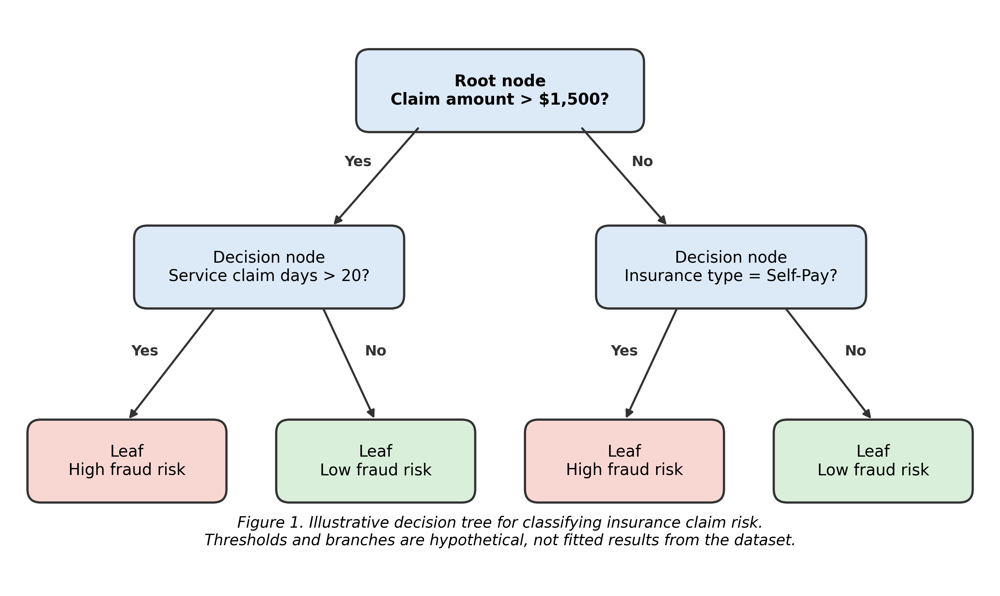
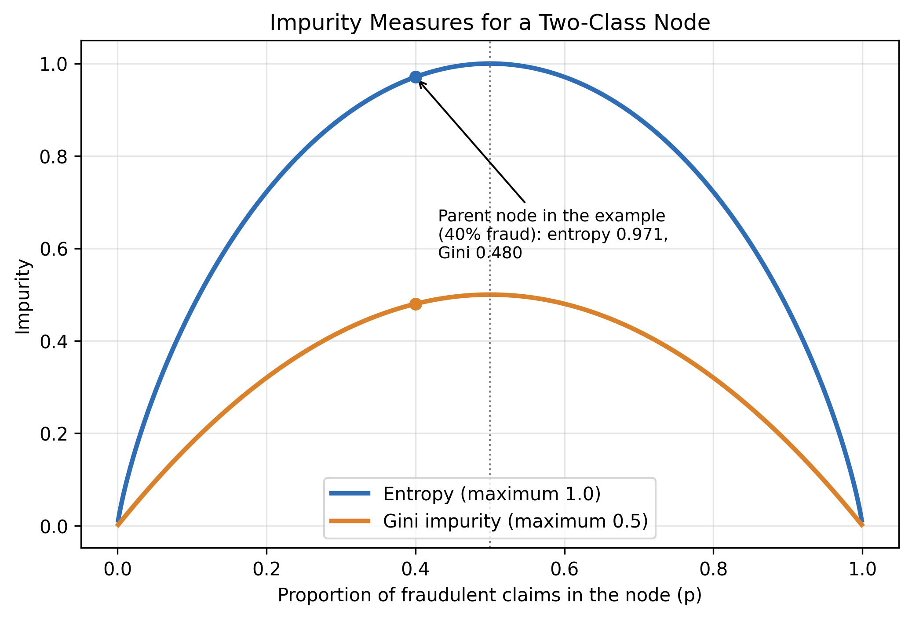
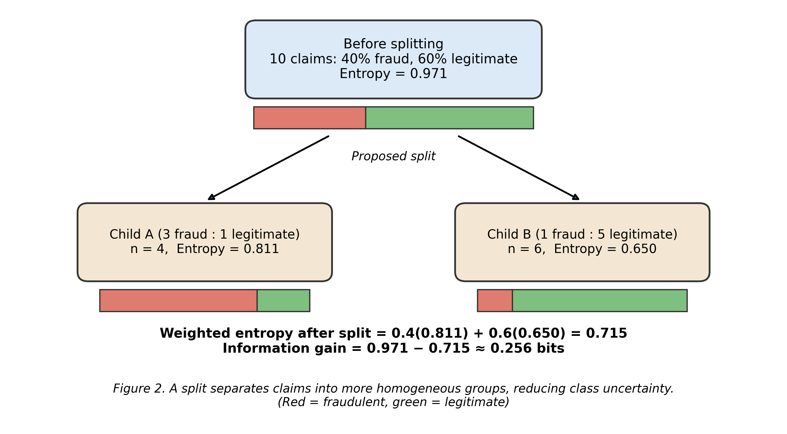
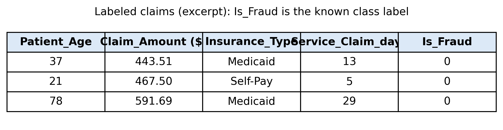
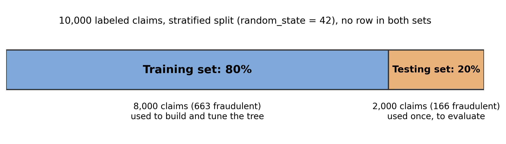
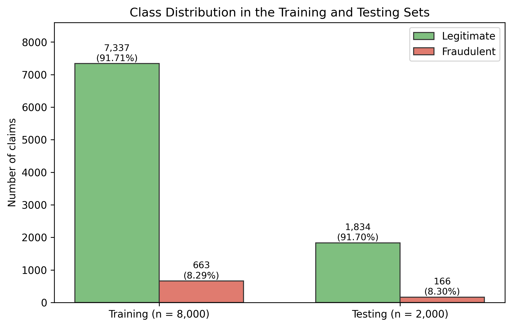
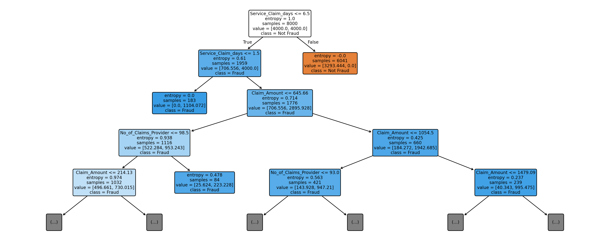
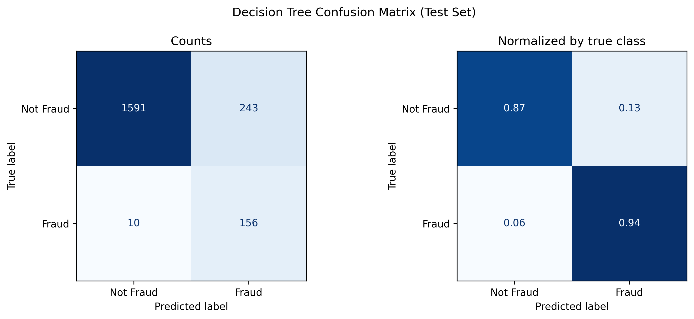
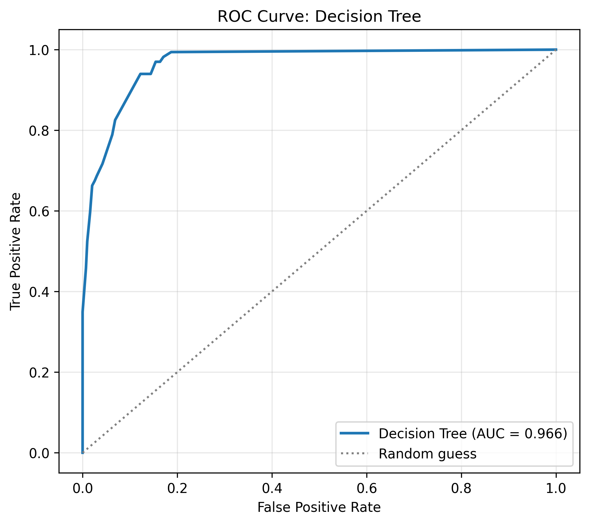
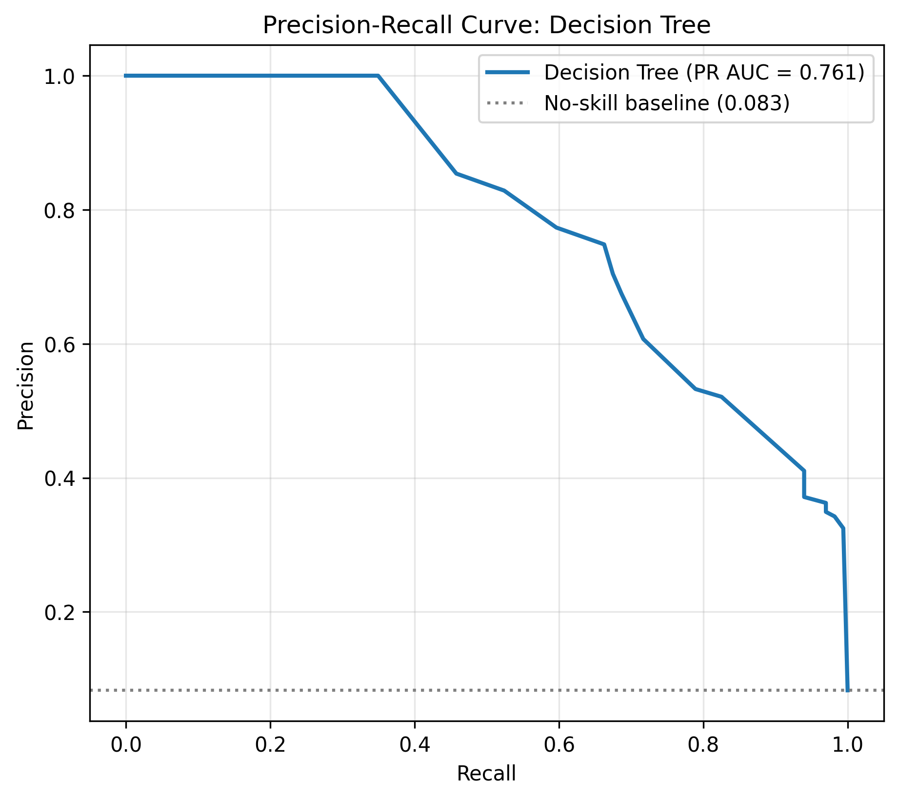

DecTrees
Decision Trees
Overview
A decision tree is a supervised machine learning algorithm used for classification and regression. It works by repeatedly dividing observations into smaller, more homogeneous groups based on the values of predictor variables, and each division is expressed as a simple yes-or-no question about one variable. A tree consists of a root node (the first question, applied to all observations), decision nodes (further questions), branches (the answers), and terminal leaf nodes, which give the predicted class or value. Because the path from the root to a leaf is a readable sequence of rules, decision trees are among the most interpretable models in machine learning.

Decision trees can be used for classification (for example, labeling a claim as fraudulent or legitimate), for regression (for example, predicting a claim amount), for segmenting customers into risk groups, and for identifying which variables matter most. For insurance claims, a tree can reveal relationships among claim amounts, patient characteristics, insurance types, provider characteristics, and claim outcomes, and its rules can be turned directly into screening or pricing tiers. In this project the target variable is Is_Fraud, so the tree is used for fraud classification, a supplementary risk question alongside the project's main focus on claim frequency, severity, and pricing.
Gini Impurity, Entropy, and Information Gain
At every node the algorithm must decide which variable and which threshold give the best split. It does so with an impurity measure, which scores how mixed the classes are inside a node. A node containing only one class is pure and has an impurity of zero. The two most common measures are Gini impurity and entropy.
Gini = 1 − Σ pk2 Entropy = −Σ pk log2(pk)
Here pk is the proportion of observations in the node that belong to class k. Gini impurity measures the probability that a randomly chosen observation would be misclassified if it were labeled at random according to the node's class proportions. Entropy measures the uncertainty in the class distribution. For two classes, both are zero for a pure node and largest when the classes are evenly mixed, as the figure below shows. Gini is slightly cheaper to compute because it needs no logarithm, while entropy penalizes mixed nodes more heavily. In practice the two usually produce very similar trees.

Impurity alone describes one node. To judge a split, the algorithm compares the parent node with the child nodes it produces. Information gain is the reduction in impurity from the split: the parent's impurity minus the size-weighted average impurity of the children. The tree evaluates many candidate splits and keeps the one with the largest gain. With Gini the same quantity is called the Gini gain. Splitting continues until a stopping rule is met, such as a maximum depth, a minimum leaf size, or no further gain.
Information Gain = Impurity(parent) − Σ (nj / n) × Impurity(childj)
Worked Example
Suppose 10 insurance claims contain 4 fraudulent and 6 legitimate claims, and a proposed split produces two groups: Child A with 3 fraudulent and 1 legitimate claim, and Child B with 1 fraudulent and 5 legitimate claims.
| Node | Fraud | Legitimate | Entropy | Gini |
|---|---|---|---|---|
| Parent (n = 10) | 4 | 6 | 0.971 | 0.480 |
| Child A (n = 4) | 3 | 1 | 0.811 | 0.375 |
| Child B (n = 6) | 1 | 5 | 0.650 | 0.278 |
| Weighted average of children | 0.715 | 0.317 | ||
| Information gain | 0.256 bits | 0.163 |

Why So Many Trees Are Possible
In theory an unlimited number of different trees can be built from the same data. Different variables can be chosen at each node, the same variable can be reused at deeper levels, and the order of the splits can change. For a continuous predictor such as claim amount, the threshold can be any real number, and infinitely many real numbers lie between any two observed values, so there are infinitely many possible questions. A tree can also be grown to any depth, since every leaf can be split again. Different training samples and different stopping rules give still other trees. For a fixed, finite dataset, however, thresholds that fall between the same two neighboring observations produce the same partition, so the number of distinct partitions of the training records is finite, though extremely large. Because the tree is chosen greedily one split at a time, the final tree is also not guaranteed to be the best of all possible trees. This is why depth limits, minimum leaf sizes, pruning, and cross-validation are used to control complexity and prevent overfitting, where a tree memorizes the training data and performs worse on new claims.
Data Prep
Supervised methods learn from examples whose correct answers are already known, so they can be built only from labeled data. Each claim must have a known class label, which the model learns to predict from the other variables. Rows without a label cannot be used for training or for testing. The analysis uses the health insurance claims dataset of 10,000 observations and 23 variables, with Is_Fraud supplying the known labels (0 for a legitimate claim and 1 for a fraudulent claim). The classes are imbalanced: 9,171 claims (91.71%) are legitimate and 829 (8.29%) are fraudulent.
Link to the labeled sample data (CSV): dt_sample_data.csv

Is_Fraud, is the known class label.Fourteen predictors were selected: Claim_Amount, Patient_Age, No_of_Claims_Provider, Service_Claim_days, Length_of_Stay, Prior_Visits_12m, Chronic_Condition_Flag, Insurance_Type, Patient_Gender, Provider_Specialty, Visit_Type, State, Diagnosis_Code, and Procedure_Code. The target Is_Fraud was excluded from the predictors so the model never sees the outcome it is trying to predict. Decision trees choose their own split thresholds, so numeric variables were kept in their original units, with no scaling or binning. Categorical variables were converted to 0/1 indicator columns with one-hot encoding, producing 51 features. Missing categorical values were assigned an "Unknown" category, and missing numeric values were filled with medians calculated from the training set only.
Training and Testing Sets
The labeled data was divided into a training set, used to build the model and tune its settings, and a testing set, used once at the end to measure how accurately the model predicts claims it has never seen. The split was 80/20 using Scikit-learn's train_test_split with random_state=42, with stratified sampling so that the fraud proportion is nearly the same in both subsets. The split was done before any preparation step, so the fill values and encoded columns were learned from the training set alone, and the test features were then aligned to the training columns.
| Dataset | Observations | Legitimate | Fraudulent | Encoded Features |
|---|---|---|---|---|
| Training | 8,000 | 7,337 | 663 | 51 |
| Testing | 2,000 | 1,834 | 166 | 51 |

The two sets must be disjoint, meaning no row appears in both, and the Python program confirmed that the number of shared row indices was zero. If the same claims were used for both training and testing, the model could simply memorize them, and the test would measure memory rather than the ability to generalize, producing misleadingly optimistic accuracy. A decision tree is especially prone to this, because an unrestricted tree can grow until it fits every training claim perfectly. Settings such as the splitting criterion, maximum depth, minimum leaf size, and pruning strength were chosen with five-fold cross-validation inside the training set, so the testing set influenced none of the modeling decisions.

Results
The decision tree addresses the early fraud detection part of the research question: whether claim, provider, and patient characteristics follow patterns that separate fraudulent claims from legitimate ones, and whether those patterns can be expressed as readable rules. It does not model claim frequency, severity, or premiums directly. Three different trees were built and are compared below. Tree 1 is the tuned model, whose settings were chosen by five-fold cross-validation on the training set, scored by precision-recall AUC. It used the entropy criterion, a maximum depth of 8, a minimum of 50 observations per leaf, and no additional cost-complexity pruning, with a cross-validated PR-AUC of 0.754. All trees used balanced class weights so the rare fraud class was not ignored, and all were evaluated on the same testing set of 2,000 claims, made up of 1,834 legitimate and 166 fraudulent claims.
Tree 1: Tuned Tree (Entropy, Depth 4)

Service_Claim_days at 6.5 days sends every claim filed more than 6.5 days after service to a pure legitimate leaf, and claims filed within 1.5 days form a pure fraud leaf. Claims filed between 1.5 and 6.5 days are separated further by claim amount and provider claim count.| Metric | Value |
|---|---|
| Accuracy | 87.35% |
| ROC-AUC | 0.966 |
| PR-AUC (baseline 0.083) | 0.761 |
| Fraud Precision | 39.10% |
| Fraud Recall | 93.98% |
| Fraud F1-Score | 0.552 |
| Specificity (Legitimate Recall) | 86.75% |
| False Positives | 243 |
| False Negatives | 10 |
| Predicted Legitimate | Predicted Fraud | Total | |
|---|---|---|---|
| Actual Legitimate | 1,591 | 243 | 1,834 |
| Actual Fraud | 10 | 156 | 166 |

Accuracy alone is misleading here. A model that labeled every claim legitimate would be correct for 91.70% of claims and would detect no fraud, so the 87.35% accuracy of the tree is lower than that baseline because the model deliberately trades accuracy for fraud detection. The more informative measures are recall and precision. The tree caught 156 of the 166 fraudulent claims, but only 39.10% of the 399 flagged claims were truly fraudulent. That is still about 4.7 times the 8.3% fraud rate in the test set, so a flagged claim is far more likely to be fraudulent than a randomly chosen one.


The tree was also examined to see which variables drive its predictions. Built-in importance can favor variables with many possible split points, so permutation importance, which measures how much the test PR-AUC falls when a variable is shuffled, was computed as a check. Both measures agree.
| Feature | Tree Importance | Permutation Importance (drop in PR-AUC) |
|---|---|---|
| Service_Claim_days | 0.9062 | 0.6503 |
| Claim_Amount | 0.0652 | 0.1061 |
| No_of_Claims_Provider | 0.0168 | 0.0204 |
| Length_of_Stay | 0.0038 | — |
| Diagnosis_Code: F41.9 | 0.0029 | 0.0008 |
For context, the Naive Bayes models on the previous tab reached an ROC-AUC of 0.962 and a PR-AUC of 0.682. Compared with them, the tuned tree produced fewer false alarms (243 versus 295) and a higher PR-AUC (0.761), while Naive Bayes missed fewer fraudulent claims (3 versus 10).
Conclusions
The decision trees show that fraudulent claims follow a predictable and readable pattern in this dataset. The tuned tree reached an ROC-AUC of 0.966 and a PR-AUC of 0.761, caught 156 of the 166 fraudulent claims, and ranked better than Naive Bayes on precision, accuracy, and PR-AUC. The pattern is dominated by timing: claims filed within about six days of service were far more likely to be fraudulent, and every claim filed later than 6.5 days was legitimate. Claim amount and the provider's claim count refined the decision for claims in the short-delay group. This supports the early fraud detection part of the research question, because all of these characteristics are available when a claim is submitted, and the splits translate directly into screening rules a claims reviewer can apply. [FILL IN: one sentence on what Trees 2 and 3 show, for example whether a depth-3 tree is nearly as accurate and whether other variables carry signal without the service-to-claim delay.]
Just as important to report honestly, the tuned tree flagged 243 legitimate claims as fraudulent, so fraud precision was only about 39% despite recall near 94%. Reviewing the roughly 20% of claims that were flagged (399 of 2,000) would capture about 94% of the fraud, which makes the tree better suited to prioritizing claims for review than to making final decisions. The result also depends heavily on a single variable, which suggests the rule is almost deterministic in this dataset. If the data is simulated or synthetic, that pattern is probably cleaner than in real claims, and the tree should be tested on real data before any operational use. In addition, the best maximum depth (8) was the largest value tried, the test set contains only 166 fraudulent claims, and a single tree can be unstable, so ensemble methods are the natural next comparison.
In terms of this project's central theme, fraud classification is related to but distinct from claim frequency and severity. These results do not directly estimate claim counts, claim amounts, or premiums. The tree's fraud scores could serve as an additional input to risk-based pricing, and its rules show which claim characteristics deserve attention, but modeling frequency and severity is left to the regression and boosting models later in this project.